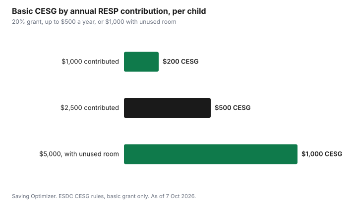

Personal Finance · Canada
Year-End Money Moves in Canada: What to Do Before December 31, 2026

Several Canadian tax and savings deadlines close on December 31, 2026. Donations, FHSA contributions, RESP contributions for this year's grant, RDSP grant and bond contributions, and contributions to your own RRSP in the year you turn 71 all have to land by that date. Tax-loss selling has an earlier cut-off: the trade has to settle in 2026, and with T+1 settlement and the TSX holiday schedule, a trade placed on Thursday, December 31 settles on Monday, January 4, 2027. Wednesday, December 30 is the last regular trading day that settles in 2026, so aim for the week before. If you plan to take money out of a TFSA, doing it before January 1 gets the room back a year sooner. The RRSP deadline for most people is not December 31; it falls about 60 days into the new year.
Key takeaways
- Donations made by Dec 31 count for 2026; you can claim up to 75% of net income and carry unused gifts forward 5 years.
- Tax-loss sales count in the year they settle. A TSX trade on Dec 31, 2026 settles Jan 4, 2027.
- FHSA: $8,000 of room a year; contributions by Dec 31 can be deducted for 2026.
- RESP: contribute $2,500 per child by Dec 31 to get this year's $500 basic CESG.
- TFSA: a withdrawal in December comes back as room on Jan 1; one in January waits a full year.
- Worked example uses made-up figures.
The December 31 deadlines at a glance
| Move | Deadline | Why it matters |
|---|---|---|
| Charitable donations | Made by Dec 31, 2026 | Counts on your 2026 return; claim up to 75% of net income, carry forward 5 years |
| Tax-loss selling | Trade must settle by Dec 31; last regular trade date Wed Dec 30 | CRA's securities slips use the settlement date |
| FHSA contribution | By Dec 31, 2026 | Only contributions made in the calendar year count toward 2026's $8,000 room and deduction |
| RESP contribution | By Dec 31, 2026 | CESG is 20% on up to $2,500 a year per child |
| RDSP contribution | By Dec 31, 2026 | Deadline for the year's matching grant and income-tested bond |
| Own RRSP at age 71 | Dec 31 of the year you turn 71 | Last day to contribute to your own RRSP |
| TFSA withdrawal | By Dec 31 to get room back Jan 1, 2027 | Withdrawals are added back the following January |
Donations: give by December 31
Gifts to registered charities made by December 31 go on your 2026 return. The CRA says you can generally claim gifts up to 75% of your net income for the year, and you can carry unused donation amounts forward for up to five years. That carry-forward is useful if your income is low this year and you expect a higher income later, or if you want to pool several small years into one claim.
The federal credit is higher on the part of your annual donations above $200: 29%, or 33% on the part that relates to income in the top federal bracket. Provinces add their own credit. Because of that $200 step, couples can often get a bigger credit by having one spouse claim both partners' receipts. Our guide to the donation tax credit and Giving Tuesday walks through how the credit works and how to confirm a charity is registered.
Tax-loss selling: the real cut-off is settlement
If you hold investments in a non-registered account that are worth less than you paid, selling them can create a capital loss that offsets capital gains. The CRA's T5008 guide tells dealers to report the date the transaction was completed, which is the settlement date. Canadian stock trades settle one business day after the trade (T+1).
The TSX is closed on Friday, December 25 and Monday, December 28 (in lieu of Boxing Day) in 2026, and closes early at 1 p.m. on Thursday, December 24. The TSX settlement calendar shows a trade on December 24 settling on December 29, and a trade on Thursday, December 31 settling on Monday, January 4, 2027. That makes Wednesday, December 30 the last regular trade date that settles in 2026. Brokers can set their own earlier cut-offs, so confirm the date with yours and leave a margin.
Watch the superficial loss rule
Your loss is denied if you, or a person affiliated with you (such as your spouse), buy the same or identical property in the period from 30 calendar days before to 30 calendar days after the sale, and still own it 30 days after the sale. A purchase in your spouse's account can trigger the rule, and buying the same investment back in one of your registered accounts is a question to put to a tax professional first. Tax-loss selling has no effect inside a TFSA or RRSP, because gains and losses there are not taxed.
FHSA, RESP and RDSP: calendar-year room
FHSA. Each year you get $8,000 of First Home Savings Account participation room, up to a lifetime limit of $40,000. The CRA is clear that the $8,000 covers contributions and RRSP transfers combined, and that it applies to the calendar year. Unlike an RRSP, there is no 60-day grace period: an FHSA contribution made in January counts for the new year. Unused room can be carried forward, within limits; our guide to FHSA carry-forward explains how.
RESP. The basic Canada Education Savings Grant is 20% of what you contribute each year, up to $500 of grant per child ($1,000 if you have unused grant room from earlier years), with a lifetime limit of $7,200. Contributing $2,500 per child by December 31 gets the full $500 for 2026. If you are behind, catching up one extra year at a time is how you use the carried-forward room; our CESG guide has the details.
RDSP. The CRA lists December 31 as the deadline to open a Registered Disability Savings Plan, make contributions and apply for the matching grant and the income-tested bond for the year.

TFSA: time withdrawals before January 1
If you plan to take money out of a TFSA in the next few months, timing matters. The CRA says a withdrawal is added back as new contribution room on January 1 of the following year. Take $5,000 out on December 29, 2026 and that $5,000 is back on January 1, 2027. Take it out on January 4, 2027 and you wait until January 1, 2028. If you are moving money between TFSAs, ask for a direct transfer rather than a withdrawal and re-deposit, or you can over-contribute.
The 2027 TFSA dollar limit had not been announced on the CRA's limits page as of 7 Oct 2026. The 2026 limit is $7,000. See how TFSA withdrawals affect your room.
Medical expenses: gather receipts now
For medical expenses, you can choose any 12-month period that ends in the tax year, and claim the amount above the lesser of 3% of your net income or a fixed dollar threshold ($2,834 for 2025, the latest year shown on the CRA page). If you have a large expense coming, such as dental work or new glasses, paying in late December or early January can change which year it counts in. Our guide to the medical expense tax credit explains the 12-month window.
RRSP: December 31 matters only at 71
For most people, RRSP contributions made in the first 60 days or so of 2027 can still be deducted on the 2026 return. For 2025, the CRA's deadline was March 2, 2026. The exception is the year you turn 71: December 31 of that year is the last day you can contribute to your own RRSP. If you turned 71 in 2026, that deadline is this December 31.
Worked example (made-up figures)
Sam and Lee are made-up examples, and all figures here are invented for illustration. In November, they plan the following:
- Sam has a non-registered fund worth $3,000 less than he paid. He sells on December 18, which leaves time before the holidays. He waits more than 30 days before buying the same fund again, and Lee does not buy it either.
- Lee wants to use $6,000 from her TFSA for a car repair in early January. She withdraws it on December 22, so the $6,000 comes back as room on January 1, 2027 instead of 2028.
- They contribute $2,500 to their daughter's RESP on December 10 to get the $500 basic CESG for 2026.
- Lee has $8,000 of FHSA room left for 2026 and contributes $4,000 by December 31. The remaining room can carry forward, subject to the CRA's limits.
- They put both partners' donation receipts on one return to cross the $200 threshold once.
None of these moves needs a large amount of money. They mostly need the right date.
Common mistakes
- Placing a tax-loss trade on December 31 and expecting it to count for 2026.
- Buying back the same investment, or letting a spouse buy it, within 30 days.
- Treating the FHSA like an RRSP and contributing in January for the previous year.
- Withdrawing from a TFSA in January when December would have restored the room a year sooner.
- Forgetting that a donation made on January 1 counts for the new year.
What to do this week
- List any non-registered investments with losses and decide by mid-December.
- Ask your broker for their last trade date for 2026 settlement.
- Top up the RESP to $2,500 per child, if cash flow allows.
- Decide on FHSA contributions before December 31.
- Make any TFSA withdrawals you need in the next few months before January 1.
- Collect donation and medical receipts in one folder for tax season.
Sources
- Canada Revenue Agency, Donations and gifts: how much you can claim (75% of net income; 5-year carry-forward; federal rates), canada.ca, page modified 2026-07-06, as of 7 Oct 2026.
- Canada Revenue Agency, Donations and gifts: who can claim (you or your spouse or common-law partner), canada.ca, page modified 2026-07-06, as of 7 Oct 2026.
- Canada Revenue Agency, T5008 Guide, Return of Securities Transactions (Box 14 settlement date), canada.ca, as of 7 Oct 2026.
- TMX Group, TSX trading hours and 2026 market holidays (Dec 24 early close; Dec 25; Dec 28), and 2026 settlement schedule, tsx.com, as of 7 Oct 2026.
- Canada Revenue Agency, Capital losses: superficial loss (30 days before and after), canada.ca, page modified 2026-02-05, as of 7 Oct 2026.
- Canada Revenue Agency, Participating in your FHSAs ($8,000 participation room; contributions and transfers in a calendar year), canada.ca, as of 7 Oct 2026.
- Employment and Social Development Canada, Canada Education Savings Grant (20%, $500 a year, $1,000 with unused room, $7,200 lifetime), canada.ca, as of 7 Oct 2026.
- Canada Revenue Agency, Important dates for RRSPs, HBP, LLP, FHSAs and more (age 71; RDSP Dec 31; FHSA deduction), canada.ca, page modified 2026-01-29, as of 7 Oct 2026.
- Canada Revenue Agency, Calculate your TFSA contribution room (withdrawals added back Jan 1 of the following year), canada.ca, page modified 2026-02-20, as of 7 Oct 2026.
- Canada Revenue Agency, MP, DB, RRSP, DPSP, ALDA, TFSA limits, YMPE and the YAMPE (TFSA limit $7,000 for 2026; no 2027 figure shown), canada.ca, as of 7 Oct 2026.
- Canada Revenue Agency, Eligible medical expenses (12-month period; 3% or $2,834 for 2025), canada.ca, as of 7 Oct 2026.
- Canada Revenue Agency, How contributions affect your RRSP deduction limit (2025 deadline March 2, 2026), canada.ca, as of 7 Oct 2026.
- Names and amounts in the worked example are made up.
Frequently asked questions
What is the last day for tax-loss selling in Canada in 2026?
The trade has to settle by December 31. With T+1 settlement and TSX holidays on December 25 and 28, Wednesday, December 30 is the last regular trade date that settles in 2026. A trade on December 31 settles January 4, 2027. Confirm your broker's cut-off.
Do donations have to be made by December 31?
Yes, to count for 2026. You can claim up to 75% of net income and carry unused amounts forward for five years.
Can I contribute to my FHSA in January for last year?
No. FHSA room and the deduction are based on contributions made in the calendar year.
When should I withdraw from my TFSA?
If you need the money soon, withdraw before January 1. The CRA adds withdrawals back as room on January 1 of the following year.
Is the RRSP deadline December 31?
Only in the year you turn 71. Otherwise, contributions made in about the first 60 days of the next year count. For 2025, the deadline was March 2, 2026.
What is the superficial loss rule?
Your capital loss is denied if you or an affiliated person buy identical property from 30 days before to 30 days after the sale and still hold it 30 days after.
Researched and drafted with AI assistance and fact-checked against official Canadian sources. How we create content.
Note: No bank, broker or charity is recommended. Education only, not tax advice.